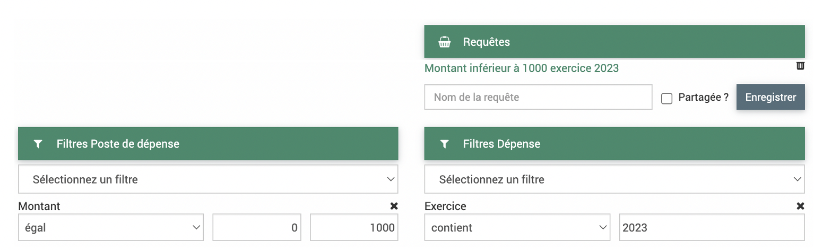
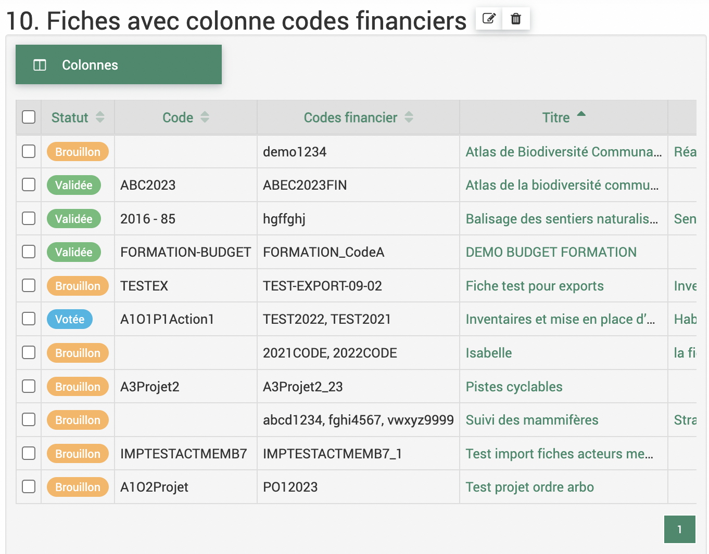

Développements 2023 10
Contexte
Un déploiement des derniers développements sur le logiciel EVA a lieu prochainement. Il comprend des résolutions d’anomalies et des améliorations des fonctionnalités existantes.
Les développements sont détaillés ci-après, avec le détail du ticket GitLab associé (il faut un compte pour le consulter) et un mode d’emploi pour les nouveautés.
À noter, pour le point 5, des colonnes seront ajoutées dans vos tableaux des fiches par défaut, si vous ne souhaitez pas les voir affichées, vous pouvez les décocher dans le choix des colonnes.
Anomalies résolues
1. Problème de synchronisation des agendas
Ticket 450 et Ticket 452 : Des anomalies sur la synchronisation des temps des agendas avaient été notés par plusieurs parcs (doublons, date incorrecte..). Des correctifs ont été déployés. Pour les parcs qui avaient noté ces anomalies, il faudra les tester pour s’assurer de la correction.
Correction à tester
2. Requête utilisateur courant dans les analyses temps
Ticket 375 : Dans les analyses temps, lorsque l’on enregistrait une requête avec « utilisateur courant » dans les filtres d’utilisateur, la requête renvoyait à l’utilisateur qui l’a créé et non à l’utilisateur connecté.
Corrigé

3. Requêtes analyses budget
Ticket 464 : Lorsque l’on cliquait sur une requête dans Analyses> budget (dépenses et recettes), les filtres pour les postes de dépenses/recettes et pour dépenses/recettes ne s’affichaient pas, ce qui ne permettait pas de voir quels filtres avaient été utilisés pour la requête.
Corrigé
{kind=link}
Améliorations des fonctionnalités existantes
4. Ajout de la colonne « code financier » dans la liste des fiches de l’accueil
Ticket 427 : La colonne « codes financiers » est désormais accessible à l’affichage dans la liste des fiches en page d’accueil.
{kind=link}
5. Ajout des colonnes de solde financier dans la liste des fiches
Ticket 427 : Ajout des colonnes de soldes et calcul budgétaire dans la liste des fiches (également accessible pour l’accueil) pour permettre d’avoir un aperçu sur la réalisation financière.
Note
Tous les parcs n’ont pas la même nomenclature financière donc la capture ci-dessous peut ne pas correspondre exactement à votre cas.
{kind=link}
Avertissement
Les colonnes vont être affichées par défaut dans vos tableaux des fiches, comme pour les autres colonnes vous pouvez simplement les décocher dans l’affichage des colonnes si vous ne souhaitez pas les afficher.
{kind=link}